Evksinograd
This is the most popular residence in Bulgaria. It has been first designed for the Bulgarian king in the 19th century, then it has been taken over from the communists and now it is a place everyone can enjoy.
Ekvsinograd03- 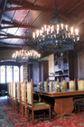
Ekvsinograd10 - 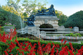
Ekvsinograd12
Ekvsinograd13- 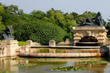
Ekvsinograd14 - 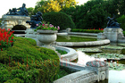
Ekvsinograd15 - 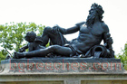
Ekvsinograd16 - 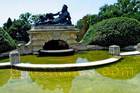
Ekvsinograd17
Ekvsinograd18
Ekvsinograd20
Ekvsinograd21
Ekvsinograd23- 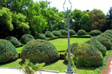
Ekvsinograd24 - 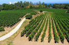
Ekvsinograd25
Ekvsinograd26
Ekvsinograd27
Ekvsinograd28
Ekvsinograd29
Ekvsinograd30
Ekvsinograd32
Ekvsinograd33
Ekvsinograd34- 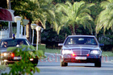
Ekvsinograd36 - 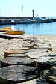
Ekvsinograd37 - 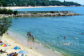
Ekvsinograd39
Ekvsinograd40- 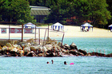
Ekvsinograd42 - 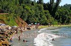
Ekvsinograd43
Ekvsinograd44
Ekvsinograd45- 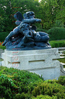
Ekvsinograd47
Ekvsinograd49- 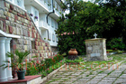
Ekvsinograd50 - 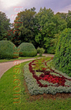
Ekvsinograd51
Ekvsinograd53- 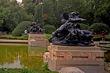
Ekvsinograd54 - 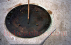
Ekvsinograd56 - 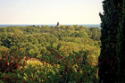
Ekvsinograd59 - 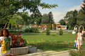
Ekvsinograd60
Ekvsinograd62- 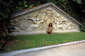
Ekvsinograd63
Ekvsinograd67
Ekvsinograd70